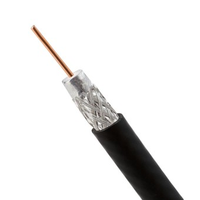
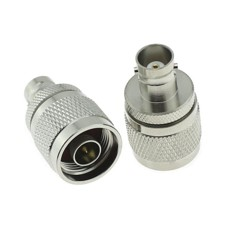
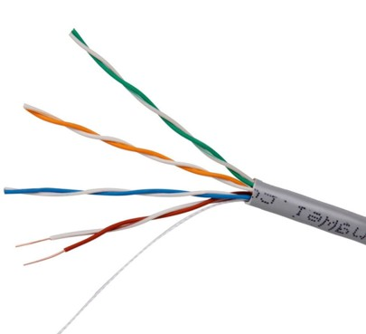
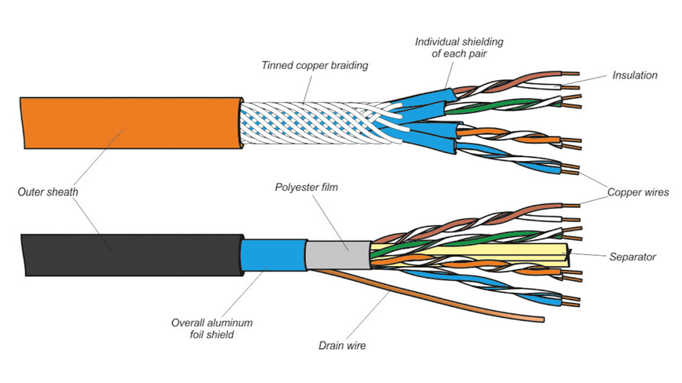
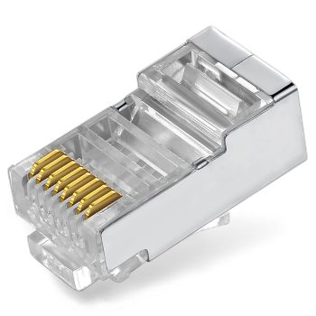
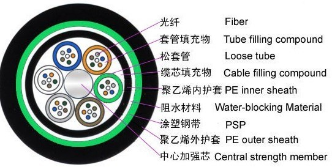
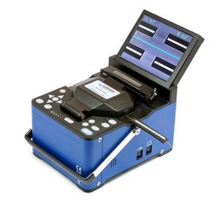

内导体：中心铜线
内绝缘层：塑料
外导体：网状导电层
包层：电线外皮
基带同轴电缆：数字信号；特征阻抗50Ω；绝缘层为铜
频带同轴电缆：模拟信号；特征阻抗75Ω；绝缘层为铝
BNC Bayonet Nut Connector - 刺刀螺母连接器


屏蔽双绞线 STP - Shielded Twisted Pair
非屏蔽双绞线 UTP - Unshielded Twisted Pair



| item | Categories | Distance | Bandwidth | Rate | desc |
|---|---|---|---|---|---|
| 3类线 | Cat 3 | 50m；标准100m | 16Mhz | <10Mbps | 传统以太网 |
| 5类线 | Cat 5 | 100m | 100Mhz | 100Mbps | 百兆网 |
| 超5类线 | Cat 5e | 100m | 100Mhz | 1Gbps | 千兆网 |
| 6类线 | Cat 6 | 100m | 250Mhz | 1Gbps | |
| 超6类线 | Cat 6A | 100m | 500Mhz | 10Gbps | |
| 7类线 | Cat 7 | 100m | 600Mhz | 10Gbps | |
| 8类线 | Cat 8 | 30m | 2000Mhz | 25/40Gbps |
传输损耗小
抗干扰性好
体积小，重量轻
单模光纤 SMF-Single Mode Fiber 适合远距离传输
多模光纤 MMF-MUlti Mode Fiber 适合近距离传输

